본 가이드는 PC 환경에서 작성되었음
update 25.05.09
자주하는 질문
Q. 이거 했다가 게임 못하는거아님?
A. 가이드대로만 잘따라하면 전혀문제없음
삭제가 오래걸리지만 그때동안 게임도 할수있고
사라질 염려도 없음
Q. 구글 + 숫자 계정 형식인데 하나 삭제하면 다른것도 삭제됨?
A. + 이용해서 만든 계정은 모두 별개 계정 취급이라 하나 삭제했다고 다른것까지 삭제하지않음
완전 다른계정이라고 생각하면됨
본 가이드는 아래에 해당할 경우 도움 될 수 있음
1) 중복생성 가능한 일회용 이메일을 통해 계정을 생성한 경우 ex)ruu.kr
2) 리세계 계정을 구매한 경우
3) 진행계를 구입한 경우
4) 갤이나 커뮤에서 계정 나눔을 받은 경우
단 본 가이드를 따라하지않는다고 무조건 문제가 생기는건 아님
실제 피해 사례는 매우 드문편임
거의 대부분의 유저는 이 과정을 거치지않아도 문제없이 플레이중임
그냥 아 쫌 찜찜한데? 하는 사람정도만 진행하면됨
Q. 타오바오에서 샀는데 계정 gazhkj 꺼에요

이 링크 통해서 접속후 패스워드를 변경할 수 있음
혹시모르니 패스워드 변경은 진행하고 그래도 찝찝한 사람만 아래 가이드 따라 진행하면될듯
돌아가서 위 네가지 경우가 위험한 이유부터 알아보자면
니케는 내가 pw를 몰라도 이메일만 접근할수있으면 접속이 가능하다
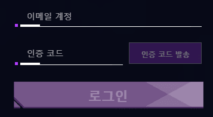
바로 인증코드 로그인 기능때문인데,
그냥 이메일만 확인가능하면 인증코드로 접속이됨
따라서 내가 게임 계정 비번을 아무리 바꿔도 그냥 들어올수있다는거
그래서 일회용 손리세, 국내/외 리세계, 진행계, 나눔계 모두 위험할수있음
극단적으로 미연동 깡계도 살때까지 분명 미연동이였고 비번까지 바꿨는데
한달뒤 소셜 연동 당할수도있음
이런 문제를 방지하기위해 본 가이드에서는 두가지 방법을 제시함
먼저 가이드 이해도를 높이기위해 계정에 대한 분류를 소개함
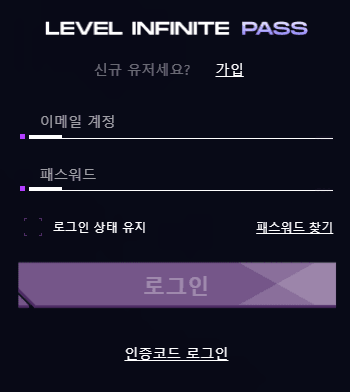
이런식으로 직접 아이디 비번을 치고 들어가는 계정은 무조건 '레벨인피니티계정'임
여기에 네이버를 적던 구글을 적던 아웃룩을적던 노알빠고 그냥 레벨인피니티계정임
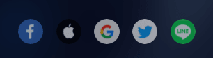
아이디입력없이 아이콘 클릭으로 로그인하면 '소셜 계정'임
아래 방법을 따라하기 전에 무조건 본인 소셜 계정에 연동해둘것!!!!
아래 방법을 따라하기 전에 무조건 본인 소셜 계정에 연동해둘것!!!!
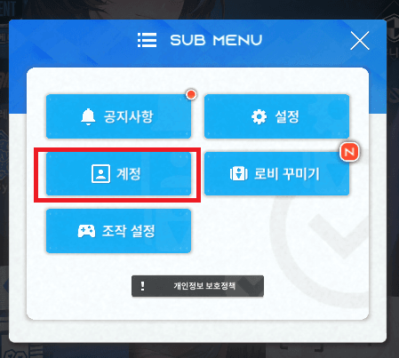
메뉴 > 계정
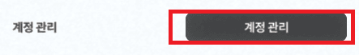
계정 > 계정 관리
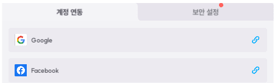
본인 소셜 계정에 연동한다
연동되면 클립모양 표시가 사라짐
내가 연동한적 없는데 이미 뭔가 연동되어있다? -> 그 계정은 좆된거임
아래 링크를 통해 즉시 소셜연동 해제
https://gall.dcinside.com/mgallery/board/view/?id=gov&no=2617935
여기서 자주 묻는 질문
Q. 이미 계정이 연동됐다고 뜨면서 연동이 안되는데요?
클립모양이 없거나 초록버튼이 나오는 경우만 연동된거임
대부분의 경우 아무 연동없는 상태임
이런경우 해결방법이 두개임
방법1. 새로운 소셜 계정을 만들고 연동한다(구글깡계, 페이스북 깡계등)
방법2.
1. 내가 잘못 연동한 계정으로 접속한다
2. 인게임 계정 삭제를 신청한다 (10일 소요)
3. 10일뒤, 내가 지금 플레이하는 니케 계정에서 재연동한다
두번째 방법은 시간이 오래걸림으로 선택은 본인의 몫임
소셜 연동후 레벨 인피니티 계정을 삭제
연동 이후 계정을 삭제하러갈꺼임
인게임 계정 삭제를 이용하지말고
https://pass.levelinfinite.com/

레벨인피니티 공식 홈페이지에서 계정 삭제 절차를 진행해야함
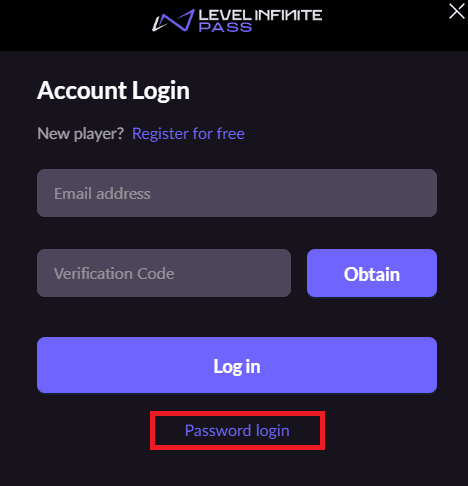
홈페이지 접속후 우측상단 사람모양 클릭 로그인창이 뜰꺼임
아래 Password login을 클릭해서 아이디 비번입력
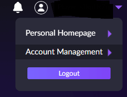
로그인 이후에 Account Management로 들어감
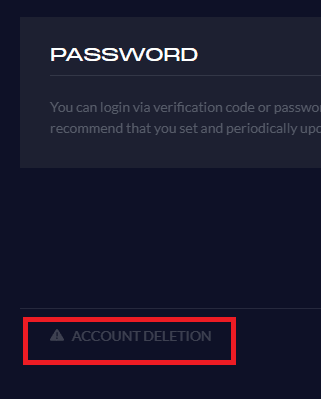
ACCOUNT DELETION 클릭
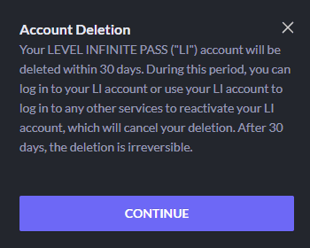
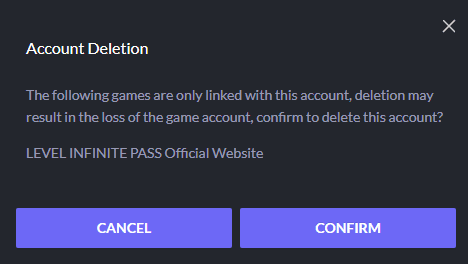
COUNTINUE > CONFIRM
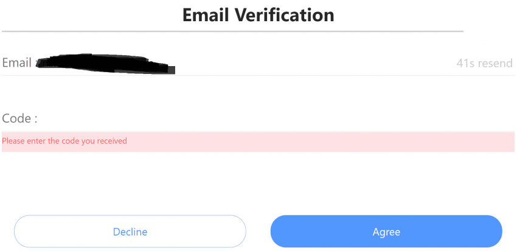
여기에 그냥 너가 쓰는 이메일 하나 써넣고 인증받으면됨, 아무거나 ㄱㅊ
메일함 확인해서 인증번호 입력하고 잠깐 멈추삼
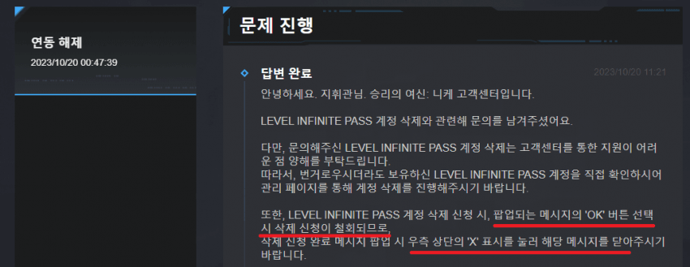
다음 버튼을 누르기전에 고객센터에서 말하는게 있음
문의날자 23.10.20
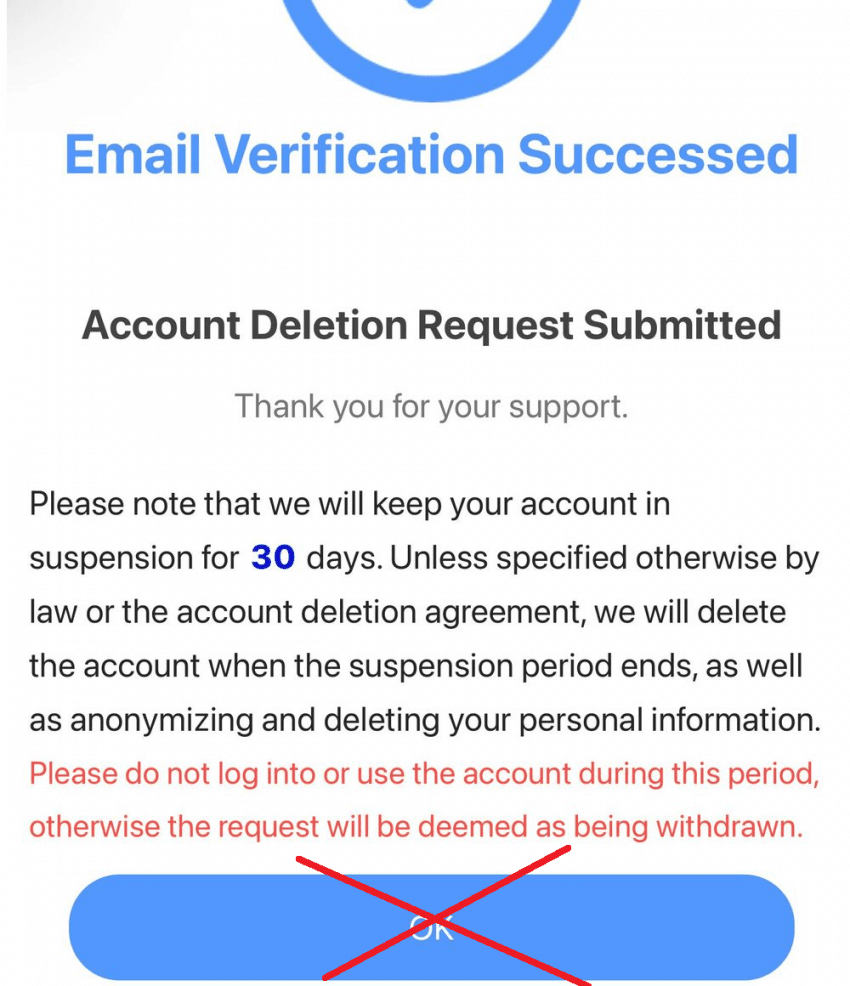
이 창에서 OK 버튼을 누르지말고 그냥 X창을 눌러 페이지를 꺼야한다고 고객센터가 안내하고있음
실제로 여기서 OK 버튼을 누르지않아도 계정 삭제 처리 절차에 들어갔다고 이메일 옴
24.11.04 이거 OK 눌러도 상관없다는 제보도 받았음
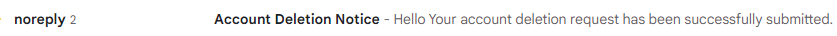
마지막으로 삭제신청한 이메일 계정에 삭제 확인 메일이 왔는지 보고
그냥 잊어버리는게 베스트 이제 아무것도 안건드면됨
게임 접속만 하면 되는데
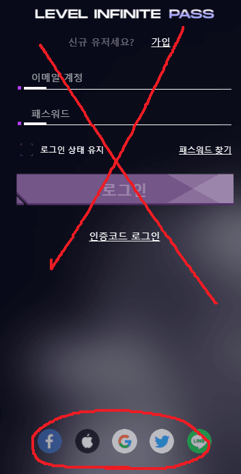
아이디 비번 치지말고
아래 버튼 클릭해서 소셜 계정으로 접속해야함
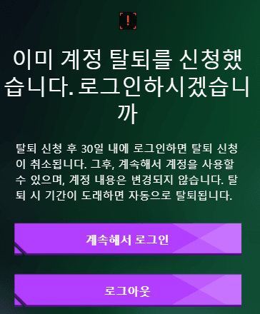
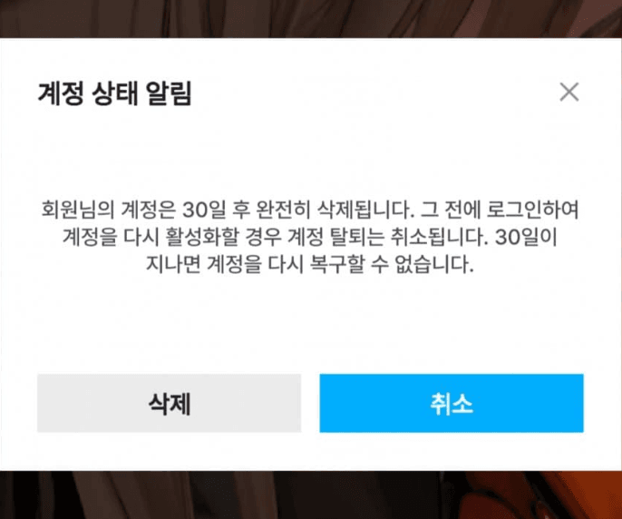
위 사진은 PC버전이고 아래사진은 모바일버전임
로그인하면 이런창이 뜰탠데, 계속해서 로그인누르거나 삭제버튼 누르고 접속하면됨
사람에 따라 이창이 안뜨는 경우도 있다고 하는데 삭제는 정상적으로 진행된다고 함
35일 후에는 레벨 인피니티로 로그인 하려고하면 계정이 없다고 뜰꺼임
갑자기 왠 35일 이냐고하는데 30일이나 31일 접속했다가 취소되는 사례가 많다보니
안전하게 35일 정도 잊고 살아
삭제가 완료되면 기존처럼 직접 아이디 비번치고 들어가는건 불가능함
계정관리에서 새로 본인 인피니티 계정을 만들어 연동하면 가능
참고로 현재 갤 공지에있는 손리세가이드는 이 과정이 필요없음
중복가입 불가한 일회용메일로 안내하기 때문
Q. 가이드 대로 따라했는데 삭제가 안됬어요
https://gall.dcinside.com/mgallery/board/view/?id=gov&no=1240691
Q. 분명히 하루 뒤 삭제된다는 메일이왔는데도 그 다음날 확인해보니 삭제가 안됬어요
A. 그 메일 그대로 캡쳐해서 인게임 고객센터에 문의 ㄱㄱ
Q. 제대로 삭제 되는거 맞나요?
A. 삭제 신청 직후, 7일전, 1일전 삭제 예정이라고 메일 날아옴
삭제 당일에는 완료했다는 메일이 안날아오니 참고해
Q. 삭제 후 꼭 재연동 해야하나요?
A. 재연동을 추천함, 레벨 인피니티 출석체크 보상같은것도 있기때문
가이드를 보고 갤에 질문글 올리는것보다
댓글로 물어보는게 더 빠른 답변 받을수도 있음